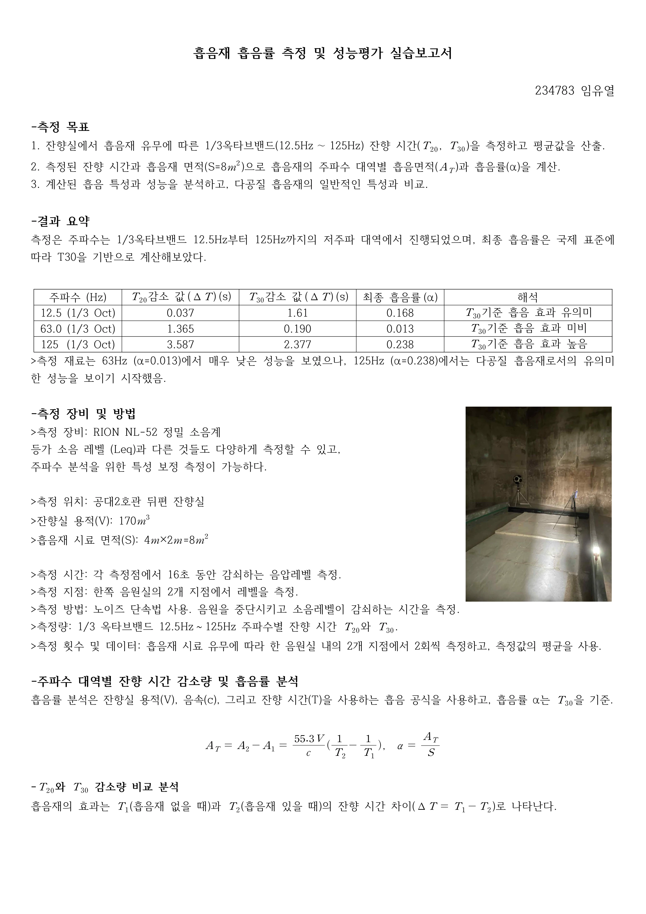

REVERBERATION & ABSORPTION
잔향의 변화로 읽는 흡음재
흡음재를 넣기 전과 후의 잔향시간을 비교하고, 저주파 대역의 흡음률을 계산했습니다. 재료의 효과가 주파수에 따라 어떻게 달라지는지 분석했습니다.
- YEAR / SEMESTER
- 3학년 2학기
- COURSE
- 건축음향
- CONTRIBUTION
- 측정·실습 보고서
- SITE / SUBJECT
- 잔향실 내 흡음재 설치 전·후

THE IDEA
생각의 출발점
체적 170 m³의 잔향실에 8 m²의 흡음재를 설치하고, 두 지점에서 반복 측정했습니다. 소리의 감쇠를 T20·T30으로 정리한 뒤 12.5–125 Hz 범위에서 흡음 특성을 살폈습니다.
- 01
소리가 사라지는 시간을 측정
설치 전·후의 감쇠 기록으로 잔향시간을 산정하고, 측정 지점과 반복값을 평균했습니다.
- 02
대역별 차이를 해석
계산된 흡음률은 63 Hz에서 0.013, 125 Hz에서 0.238이었습니다. 31.5 Hz에도 비교적 큰 값이 나타나, 주파수가 높을수록 일률적으로 좋아진다고 단정하지 않았습니다.
- 03
측정 범위 안에서 결론 내리기
이 실습은 저주파 대역의 비교입니다. 일반적인 중·고주파 흡음 성능이나 NRC를 판단하려면 해당 대역을 포함한 추가 측정이 필요합니다.
READING THE RESULTS
저주파 흡음률 비교
| 주파수 | 흡음률 α |
|---|---|
| 31.5 Hz | 0.244 |
| 40 Hz | 0.000 |
| 63 Hz | 0.013 |
| 100 Hz | 0.088 |
| 125 Hz | 0.238 |
잔향실 체적 170 m³ · 시료 면적 8 m². 선택한 대역의 결과이며 전체 데이터는 보고서 이미지에 담았습니다.
PROCESS & OUTCOME
과정과 결과
사진을 누르면 크게 볼 수 있습니다.